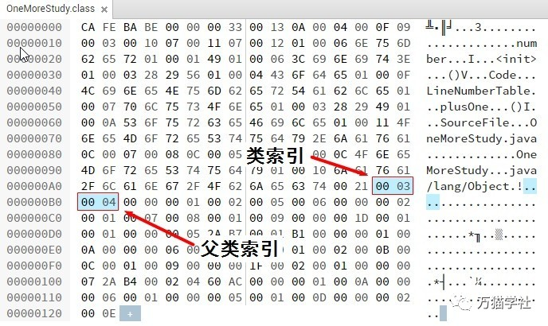
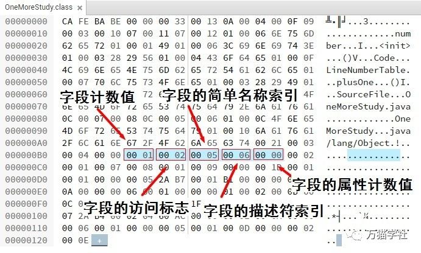
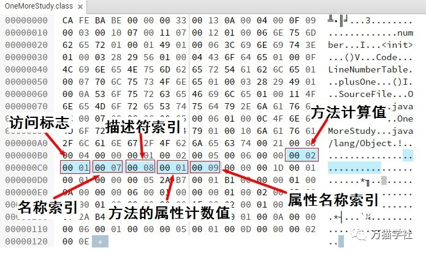

原文连接:https://www.cnblogs.com/heihaozi/p/11933218.html
接上回书
书接上一回，分享了Class文件的主要构成，同时也详细分析了魔数、次版本号、主版本号、常量池集合、访问标志的构造，接下来我们就继续学习。
欢迎关注微信公众号：万猫学社，每周一分享Java技术干货。
类索引和父类索引
类索引（this_class）和父类索引（super_class）都是一个u2类型的数据，类索引用于确定这个类的全限定名，父类索引用于确定这个类的父类全限定名。由于java语言不允许多重继承，所以父类索引只有一个。
类索引和父类索引各自指向常量池中类型为CONSTANT_Class_info的类描述符，再通过类描述符中的索引值找到常量池中类型为CONSTANT_Utf8_info的字符串。再来看一下之前的Class文件例子：

欢迎关注微信公众号：万猫学社，每周一分享Java技术干货。
结合之前javap分析出来的常量池内容：
#3 = Class #17 // OneMoreStudy
#4 = Class #18 // java/lang/Object
#17 = Utf8 OneMoreStudy
#18 = Utf8 java/lang/Object类索引为0x0003，去常量池里找索引为3的类描述符，类描述符中的索引为17，再去找索引为17的字符串，就是“OneMoreStudy”。
父类索引为0x0004，去常量池里找索引为4的类描述符，类描述符中的索引为18，再去常量池里找索引为18的字符串，就是“java/lang/Object”。
欢迎关注微信公众号：万猫学社，每周一分享Java技术干货。
接口索引集合
接口索引集合（interface）是一组u2类型的数据的集合，由于java语言允许实现多个接口，所以接口索引也有多个，它们按照implements语句后的接口顺序从左到右依次排列在接口索引集合中。接口索引集合的第一项数据是接口集合计数值（interfaces_count），表示有多少接口索引。如果该类没有实现任何接口，那么该计数值为0，后面的接口索引表不占任何字节。之前的例子OneMoreStudy类没有实现任何接口，所以接口集合计数值就是0，如下图：

欢迎关注微信公众号：万猫学社，每周一分享Java技术干货。
字段表集合
字段表（field_info）是用来描述接口或类中声明的变量。包括类级变量（静态变量）和实例级变量（成员变量），但是不包括在方法内部声明的局部变量。具体结构如下表：
| 类型 | 名称 | 数量 | 描述 |
|---|---|---|---|
| u2 | access_flags | 1 | 字段的访问标志 |
| u2 | name_index | 1 | 字段的简单名称索引 |
| u2 | descriptor_index | 1 | 字段的描述符索引 |
| u2 | attributes_count | 1 | 字段的属性计数值 |
| attribute_info | attributes | attributes_count | 字段的属性 |
字段表中的access_flags，和类的access_flags是非常类似的，但是标识和含义是不一样的。具体如下表：
| 标志名称 | 标志值 | 含义 |
|---|---|---|
| ACC_PUBLIC | 0x0001 | 字段是否public |
| ACC_PRIVATE | 0x0002 | 字段是否private |
| ACC_PROTECTED | 0x0004 | 字段是否protected |
| ACC_STATIC | 0x0008 | 字段是否static |
| ACC_FINAL | 0x0010 | 字段是否为final |
| ACC_VOLATILE | 0x0040 | 字段是否volatile |
| ACC_TRANSIENT | 0x0080 | 字段是否transient |
| ACC_SYNTHETIC | 0x1000 | 字段是否由编译器自动产生的 |
| ACC_ENUM | 0x4000 | 字段是否enum |
欢迎关注微信公众号：万猫学社，每周一分享Java技术干货。
这里提到了简单名称、描述符，和全限定名有什么区别呢？稍微说一下。
简单名称是没有类型和参数修饰的方法或字段名称，比如OneMoreStudy类中的number字段和plusOne()方法的简单名称分别是“number”和“plusOne”。
全限定名是把类全名中的“.”替换成“/”就可以了，比如java.lang.Object类的全限定名就是“java/lang/Object”。
描述符是用来描述字段的数据类型、方法的参数列表（包括数量、类型以及顺序）和返回值。基础数据类型和无返回的void类型都有一个大写字母表示，对象类型用字符L加对象的全限定名来表示，如下表：
| 标识字符 | 含义 |
|---|---|
| B | 基本类型byte |
| C | 基本类型char |
| D | 基本类型double |
| F | 基本类型float |
| I | 基本类型int |
| J | 基本类型long |
| S | 基本类型short |
| Z | 基本类型boolean |
| V | 特殊类型void |
| L | 对象类型 如 Ljava/lang/Object |
对于数组类型，每一维度使用一个前置的“[”字符来描述，比如java.lang.Object[][]的二维数据，就是“[[Ljava/lang/Object”。在描述方法时，按照先参数列表，后返回值的顺序描述，参数列表按照严格顺序放在“()”值中，比如boolean equals(Object anObject)，就是“(Ljava/lang/Object)B”。
欢迎关注微信公众号：万猫学社，每周一分享Java技术干货。
再来看一下之前的Class文件例子：

OneMoreStudy类中只有一个字段number，所以字段计数值为0x0001。字段number只被private修饰，没有其他修饰，所以字段的访问标志位为0x0002。字段的简单名称索引是0x0005，去常量池中找索引为5的字符串，为“number”。字段的描述符索引为0x0006，去常量池中找索引为6的字符串，为“I”，是基本类型int。以下是常量池相关内容：
#5 = Utf8 number
#6 = Utf8 I字段number的属性计数值为0x0000，也就是没有需要额外描述的信息。
字段表集合中不会列出从父类或者父接口中继承而来的字段，但有可能列出原版Java代码中没有的字段，比如在内部类中为了保持对外部类的访问性，会自动添加指向外部类实例的字段。
欢迎关注微信公众号：万猫学社，每周一分享Java技术干货。
方法表集合
方法表的结构和字段表的是一样的，也是依次包括了访问标志（access_flags）、名称索引（name_index）、描述符索引（descriptor_index）和属性表集合（attributes）。具体如下表：
| 类型 | 名称 | 数量 | 描述 |
|---|---|---|---|
| u2 | access_flags | 1 | 方法的访问标志 |
| u2 | name_index | 1 | 方法的简单名称索引 |
| u2 | descriptor_index | 1 | 方法的描述符索引 |
| u2 | attributes_count | 1 | 方法的属性计数值 |
| attribute_info | attributes | attributes_count | 方法的属性 |
对于方法的访问标志，所有标志位和取值如下表：
| 标志名称 | 标志值 | 含义 |
|---|---|---|
| ACC_PUBLIC | 0x0001 | 方法是否public |
| ACC_PRIVATE | 0x0002 | 方法是否private |
| ACC_PROTECTED | 0x0004 | 方法是否protected |
| ACC_STATIC | 0x0008 | 方法是否static |
| ACC_FINAL | 0x0010 | 方法是否为final |
| ACC_SYNCHRONIZED | 0x0020 | 方法是否sychronized |
| ACC_BRIDGE | 0x0040 | 方法是否是由编译器产生的桥接方法 |
| ACC_VARARGS | 0x0080 | 方法是否接受不定参数 |
| ACC_NATIVE | 0x0100 | 方法是否为native |
| ACC_ABSTRACT | 0x0400 | 方法是否为abstract |
| ACC_STRICT | 0x0800 | 方法是否为strictfp |
| ACC_SYNTHETIC | 0x1000 | 方法是否由编译器自动产生 |
方法中的Java代码，经过编译器编程成字节码指令后，放在方法属性表集合中一个名为“Code”的属性里，后面会有更多分享。
欢迎关注微信公众号：万猫学社，每周一分享Java技术干货。
再来看一下之前的Class文件例子：

方法计算值为0x0003，表示集合中有两个方法（编译器自动添加的无参构造方法和源码中的plusOne方法）。第一个方法的访问标志是0x0001，表示只有ACC_PUBLIC标志为true。
名称索引为0x0007，在常量池中为索引为7的字符串为“
#7 = Utf8 <init>
#8 = Utf8 ()V
#9 = Utf8 Code欢迎关注微信公众号：万猫学社，每周一分享Java技术干货。
属性表集合
属性表（attribute_info）在前面的分享中出现了几次，在Class文件、字段表、方法表都可以有自己的属性表集合，用来描述某些场景下特有的信息。
属性表不在要求具有严格的顺序，并且只要不与已有的属性名重复，任何人实现的编译器都可以写入自己定义的属性信息，Java虚拟机在运行时会忽略掉它不认识的属性。
我总结了一些比较常见的属性，如下表：
| 属性名称 | 使用位置 | 含义 |
|---|---|---|
| Code | 方法表 | Java代码编译成的字节码指令 |
| ConstantValue | 字段表 | final关键字定义的常量值 |
| Exceptions | 方法表 | 方法抛出的异常 |
| InnerClasses | 类文件 | 内部类列表 |
| LineNumberTable | Code属性 | Java源码的行号与字节码指定的对应关系 |
| LocalVariableTable | Code属性 | 方法的局部变量描述 |
| SourceFile | 类文件 | 记录源文件名称 |
对于每个属性，它的名称都从常量池中引用一个CONSTANT_Utf8_info类型的常量，而属性值的结构则是完全自定义的，只需要用一个u4类型来说明属性值所占的位数就可以了。具体结构如下：
| 类型 | 名称 | 数量 | 含义 |
|---|---|---|---|
| u2 | attribute_name_index | 1 | 属性名称索引 |
| u2 | attribute_length | 1 | 属性值所占的位数 |
| u1 | info | attribute_length | 属性值 |
欢迎关注微信公众号：万猫学社，每周一分享Java技术干货。
总结
Class文件主要由魔数、次版本号、主版本号、常量池集合、访问标志、类索引、父类索引、接口索引集合、字段表集合、方法表集合和属性表集合组成。随着JDK版本的不断升级，Class文件结构也在不断更新，学习之路,永不止步。
欢迎关注微信公众号：万猫学社，每周一分享Java技术干货。